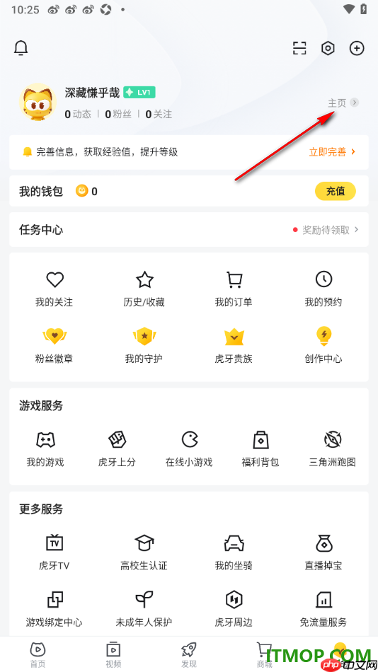
identity: 用户信息 + 等级 service: 钱包/任务/关注/订单 navigation: 底部 Tab
https://www.php.cn/faq/2812568.html
横向观察国内外直播、短视频、内容社区、电商、社交与长视频产品的“我的”页，比较个人身份信息、内容/创作管理、交易服务、会员权益与设置入口的组织方式。
分类维度：按“我的”页的核心任务与信息架构聚类：直播/视频用户服务、创作者内容资产、交易账户服务、长视频会员服务、阅读个人主页、音乐个人中心、内容社区个人中心 · 仅基于本轮通过产品身份、移动端页面匹配、完整度、质量和来源可追溯性校验的有效素材动态归纳；不按预设产品类型强行分组。每张有效截图只进入一个最能解释其结构重心的组；明确标注个人中心或用户中心变体，避免把资料编辑、弹窗、首页和单一设置子页当作同类页面。 · 有效样本：16
个人中心把关注/观看关系、等级任务、直播互动、创作或消费服务集中在同一层，强调平台内活跃与用户服务。

https://www.php.cn/faq/2812568.html
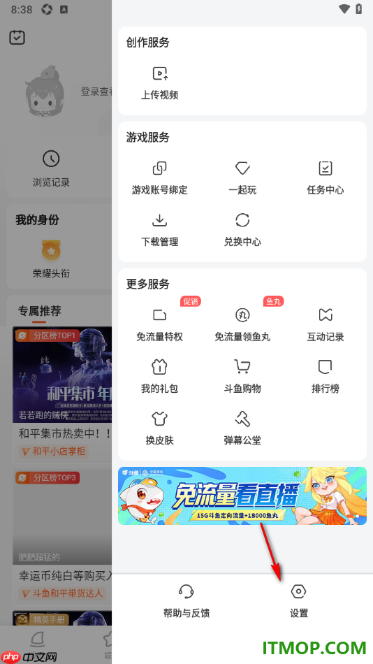
https://www.php.cn/faq/3002487.html
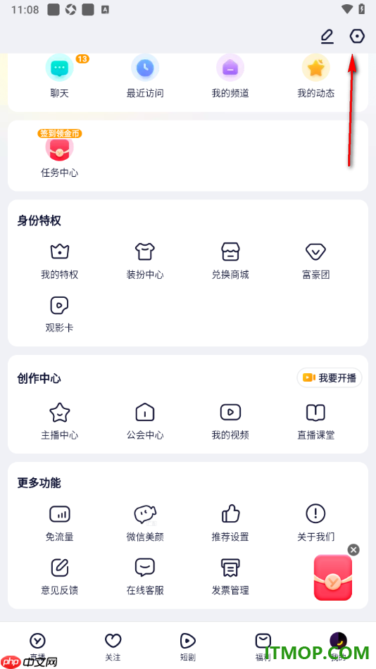
https://www.php.cn/faq/3000862.html
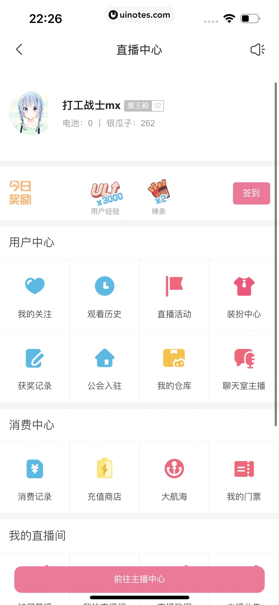
https://uinotes.com/pin/520611280278114151
页面核心是当前用户身份、作品/项目、个人资料或视频账户管理，内容资产和创作关系比交易服务更突出。
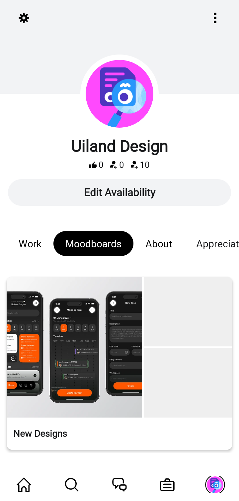
https://uiland.design/screens/behance/screens/310e753b-37a3-4d33-8699-533402b8d524/flows/my-profile
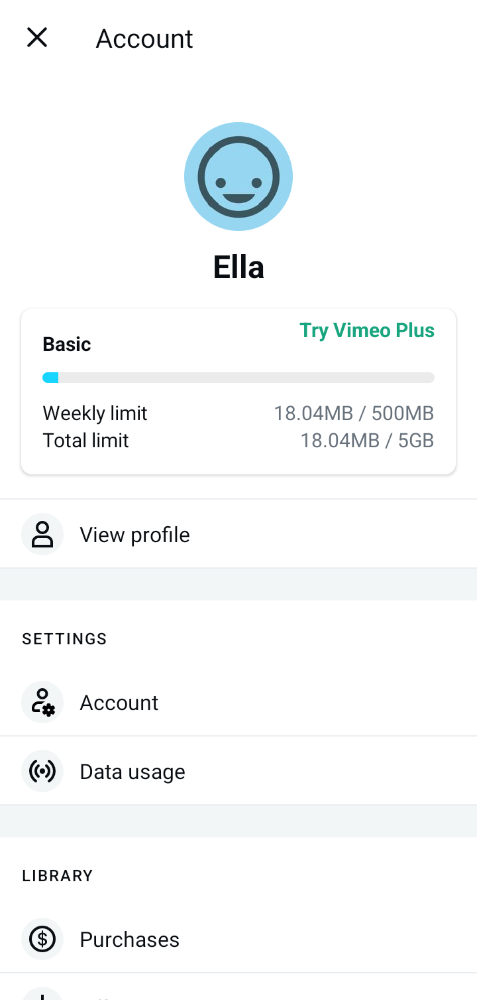
https://uiland.design/screens/vimeo/screens/484b9753-b279-4f1c-9cf7-f0c95a26f35f/flows/my-profile
页面围绕订单、钱包、购物车、退换售后、想要/足迹、出售和会员权益组织，是以交易履约与资产管理为中心的个人中心。
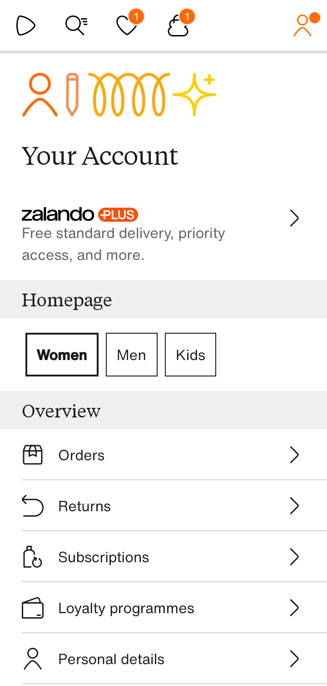
https://uiland.design/screens/zalando/screens/95ec2379-2474-4388-af3b-30a0ad8b15d5/flows/my-profile
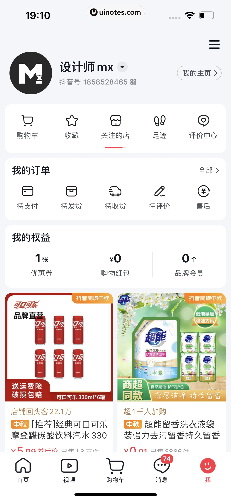
https://uinotes.com/pin/121451334733393008

https://uinotes.com/pin/658360019995979356
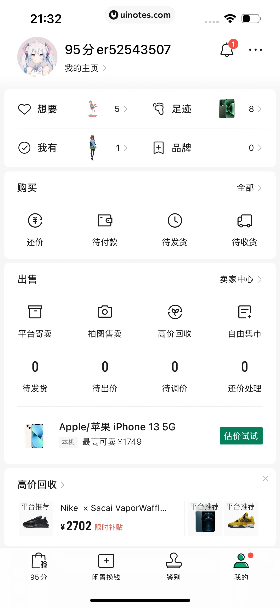
https://uinotes.com/pin/064649999994131341
个人中心把观看历史、缓存/评论、会员、商城、购买或内容服务入口集中在同一层，核心任务是继续观看与管理视频权益。
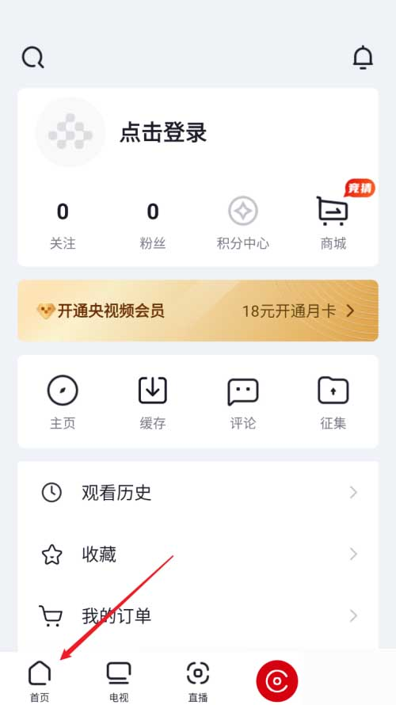
https://www.doyo.cn/app/445482.html
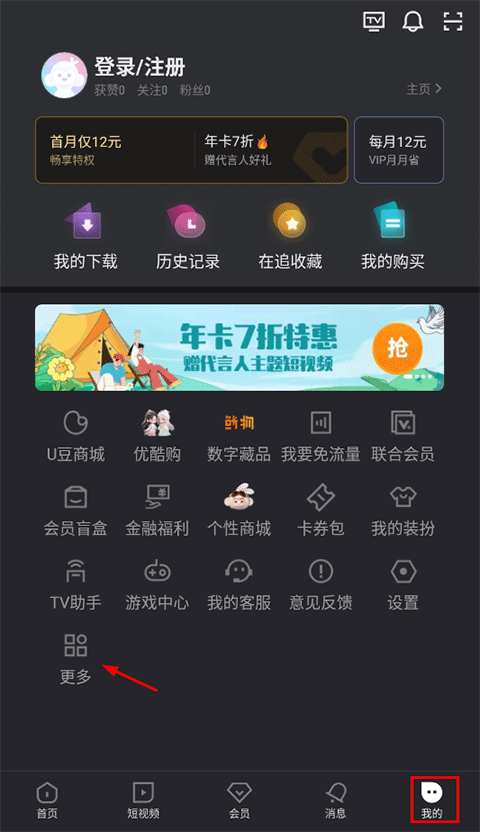
https://www.doyo.cn/app/121.html
页面以阅读时长、阅读关系、勋章、想法、书架或阅读日历为核心，把个人成就与内容消费历史放在同一层。
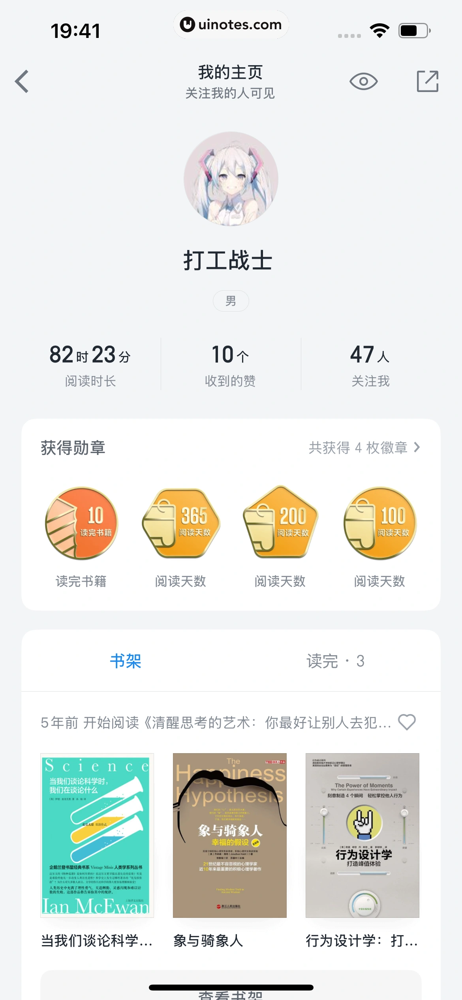
https://uinotes.com/pin/154043805281072828
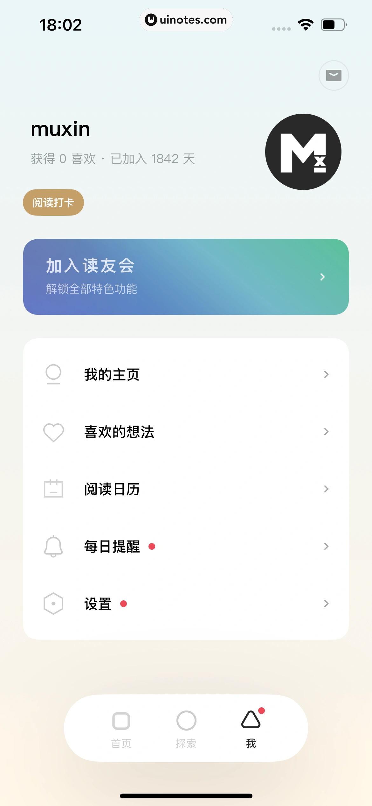
https://uinotes.com/pin/349751511966334833
页面聚焦音乐产品账号绑定、头像、昵称、身份资料和退出登录等个人资料管理，是轻量型个人中心。
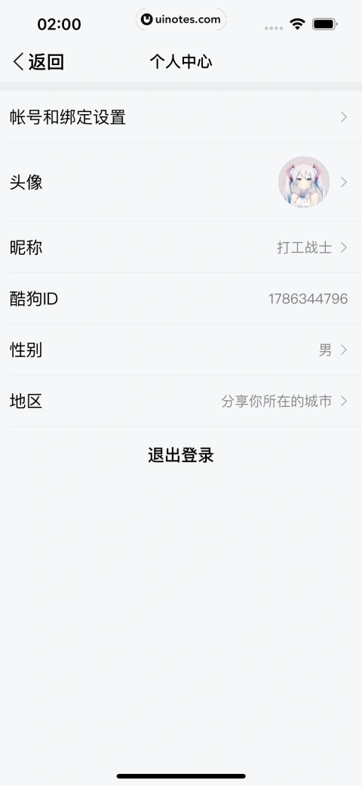
https://uinotes.com/pin/672805490324733689
页面把用户身份、个人主页、内容关系、提醒和设置组织在同一层，突出社区关系与个人内容管理。
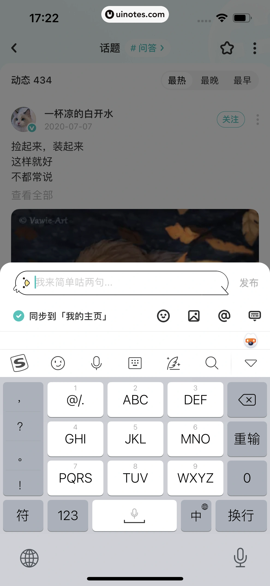
https://uinotes.com/pin/025802985569229833